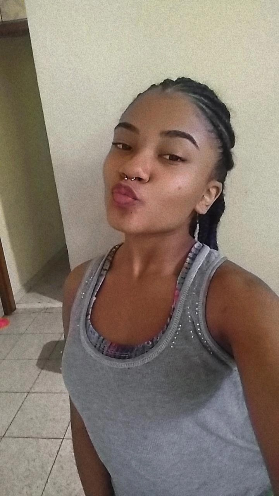

Eu sou uma pessoa que gosta muito de se exercitar, sinto que isso ajuda tanto meu corpo quanto minha mente, ultimamente não estou me exercitando e sinto que isso vem afetando minha ansiedade, não tenho problemas em dizer isso pois a comunicação é a base de tudo pra mim, então é isso aí galera, bora pra terapia!
 Eu amooo séries e documentários sobre crimes e serial killers (gente eu sou normal, juro) eu gosto ver
pois eu sou uma pessoa que vejo o bem em tudo, e infelizmente o mundo não é assim, então pra mim é uma
forma de eu mesma me lembrar de que as pessoas não são tão confiáveis.
Também é uma forma de identificar possíveis assasinos, psicopatas ou algo do tipo ao me redor, pois é, a
mulher não tem um dia de paz não mia gente.

Eu tenho três gatas, e um bezzero! hahaha é pois é, são eles: Maya, Astrid, Liliy e Marcelino heheheh.
Sou uma pessoa que gosta muito de mitologia acho que dá pra ver pelo nome das minhas gatas né? (E não
gente, Medusa nunca foi a vilã!!)
Eu amo muito escutar música, dançar, cantar (eu não diria que sou a melhor dançarina ou cantora) mas olha o condicionador do meu baheiro junto com o shampoo e o sabonete adoram a minha perfomace! (Na minha cabeça é assim)
Eu AMO muitas coisas né, mas se tem uma coisa que é muiiito importante pra mim, é o meu cabelo, ele define meu humor e a minha beleza (ele me domina, scrr) mas é isso eu amo cuidar dele e trocar de penteado, colocar tranças, é como se fosse uma terapia.
Essa, era quando meu cabelo estava no ombro eu amava porém algumas partes estavam muito desiguais.
Essa foi quando eu coloquei twist roxo, eu amava esse cabelo
eu não posso negar que vermelho sempre foi minha cor, eu usei esse twist umas três vezes kkkkk
Essa é uma foto minha com meu cabelo cortado e com as partes alinhadas, ao mesmo tempo que eu amava eu me sentia estranha por ele estar curto
Mas confesso que eu amava ele

Essa é uma das mais recentes onde eu coloquei tranças loiras, amava demais esse cabelo, meu deus
Agora, falando um pouco mais sobre minhas conquistas no PROA, eu aprendi muitas coisas pricipalmente a trabalhar minhas soft skills, que são: trabalho em equipe, comunicação, flexibilidade, adaptabilidade, liderança, empatia e paciência, aprender tudo em isso seis meses parece impossível, mas a verdade é que eu só me descobri e me conheci mais no PROA (habilidades enterradas, pois é gente)
Aqui foi a primeira vez que eu entrei no SENAC, tinha muitos proanos e foi uma experiência incrível
Nós éramos uma equipe muito unida, então a foto no elevador era meio que de lei, pra gente
Essa aqui foi quando eu e uma amiga fizemos um tour pelo SENAC, e uma fotógrafa acabou postando no insta do instituto, ficamos nos sentido as famosas por semanas, hahaha
Esse foi o nosso primeiro café da turma, e foi muito divertido, rimos muito, comemos muito e fofocamos também hahaha
Aprendi muito sobre hards skills também, e fiquei muito feliz, ao final do curso eu e minha equipe fomos premiados como Demo Day destaque, e também fui premiada como aluna destaquepor evolução durante o curso, esse tipo de momento foi muito satisfatório pois relembramos nosso esforço e dedicação como equipe.
Aqui somos eu e meu grupo no dia do Demo Day, onde a gente apresentou nosso projeto e também montamos nosso stand
Aqui são fotos dos meus certificados e prêmios
Essa aqui é uma foto minha com meus prêmios no dia da nossa formatura.